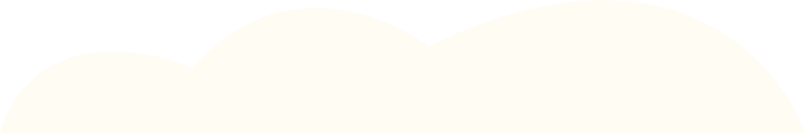
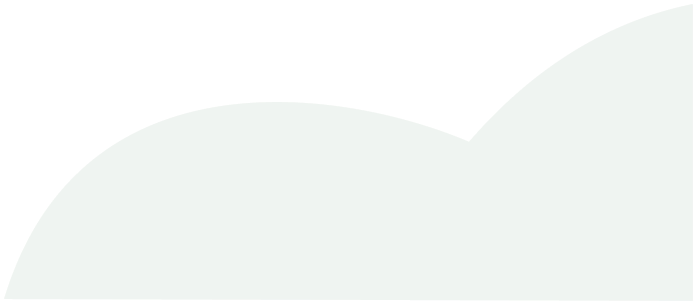
HELLO, I’M ANUSHREE JAIN. A –
PRODUCT / UX / CRO
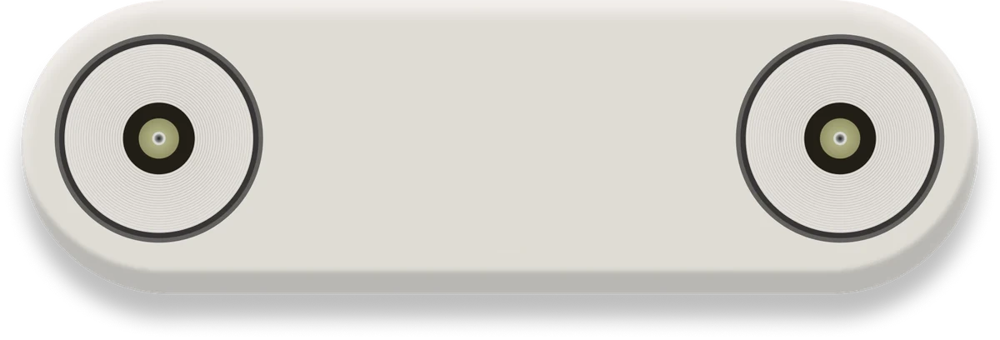
My design journey, rapped
0:001:23
Product designer blending UX, visual design and CRO to turn complex problems into simple, engaging digital experiences with a particular love for thoughtful interactions and tiny details.
I believe the best designs don’t ask for attention they earn it through thoughtful details.
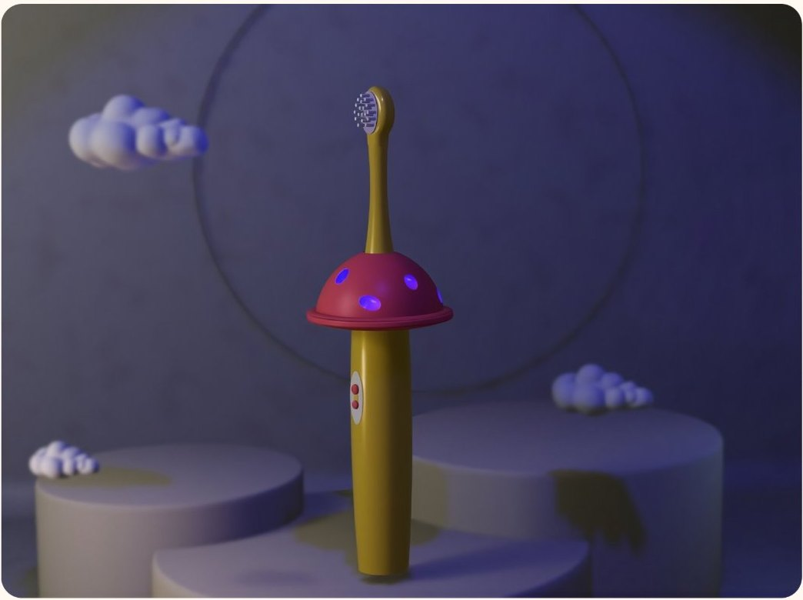
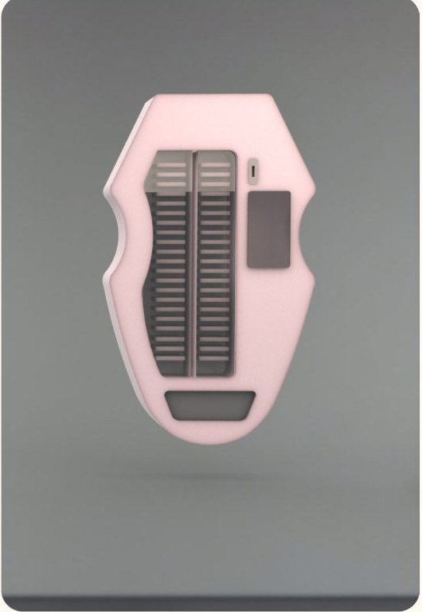
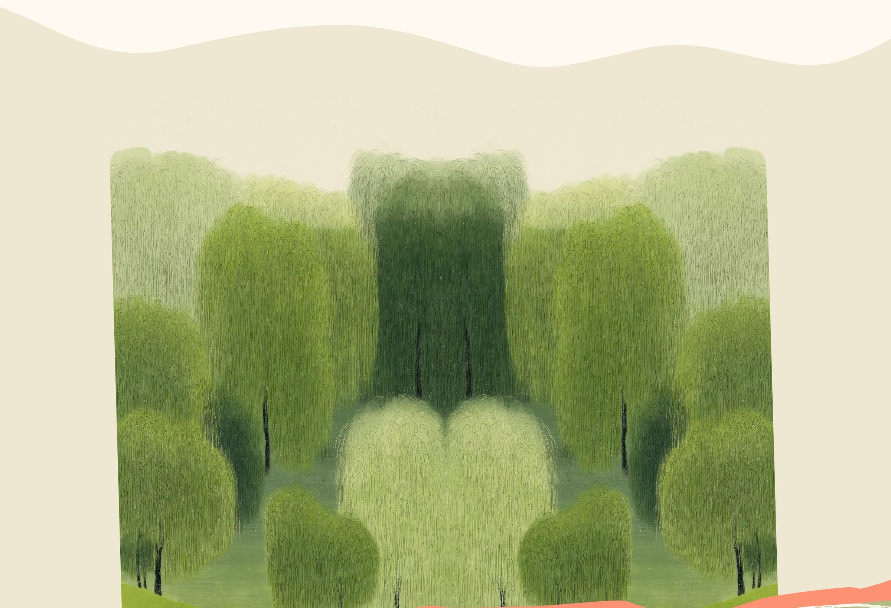
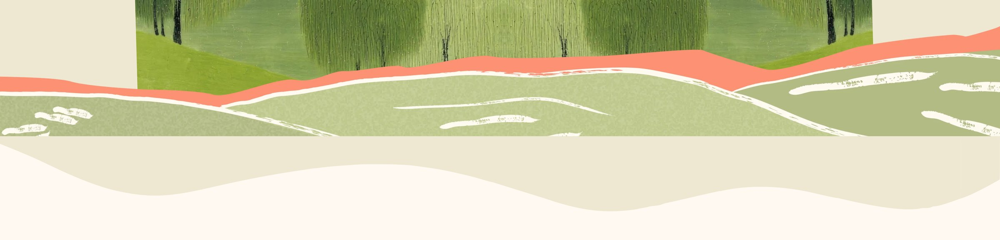
Connecting Surplus food with those in need
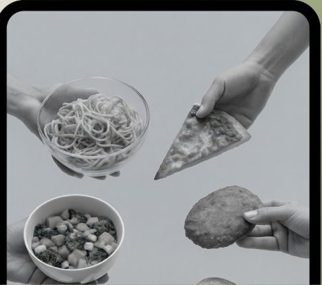
Unity based mini game on Takeshi’s Castle
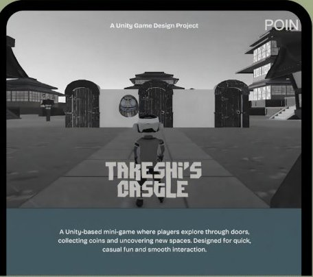
Simplifies Campaign creation and Management
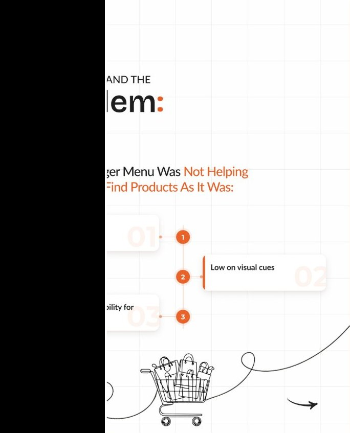
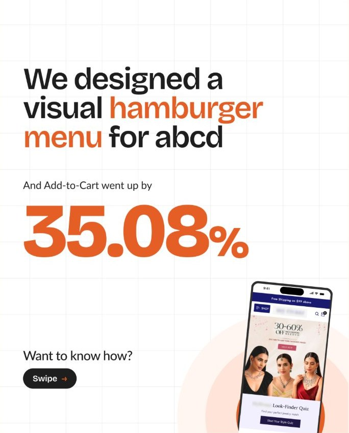
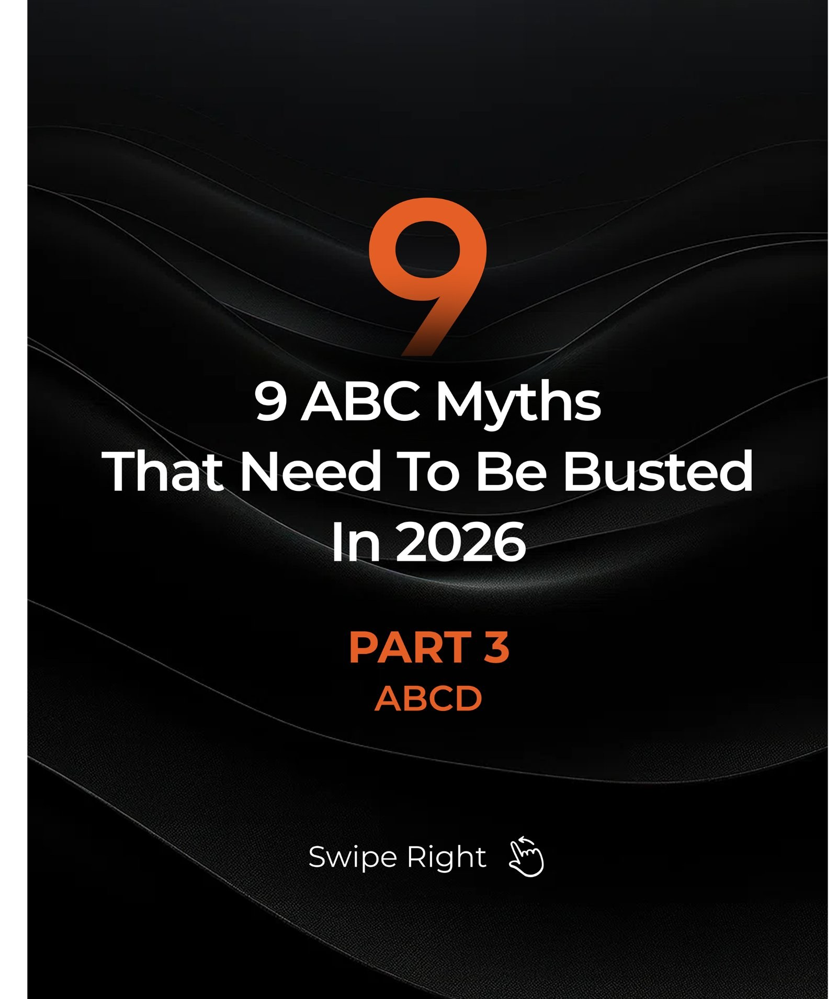
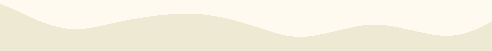
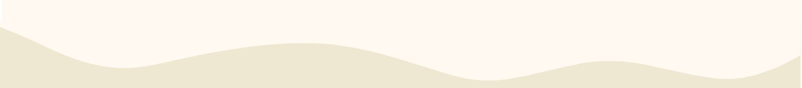
From early concepts to refined experiences, I help ambitious teams build products that earn trust, move quickly and drive growth.
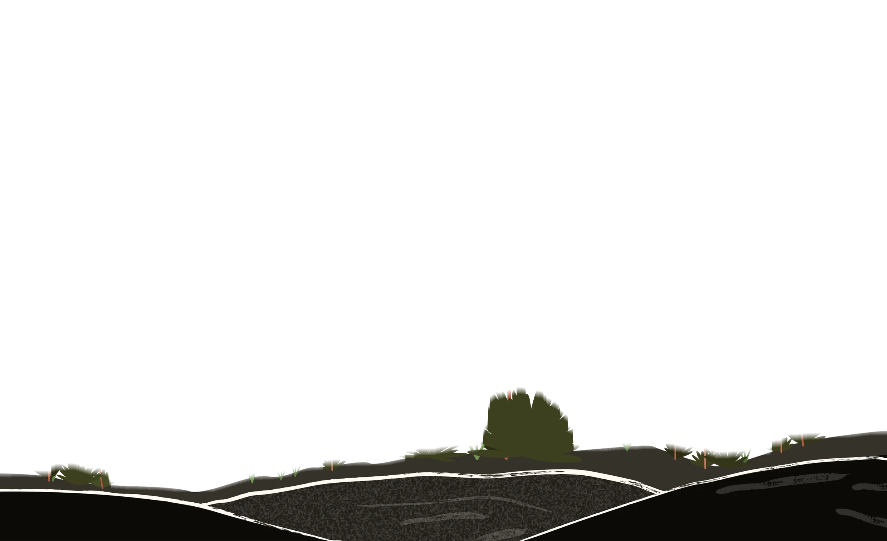